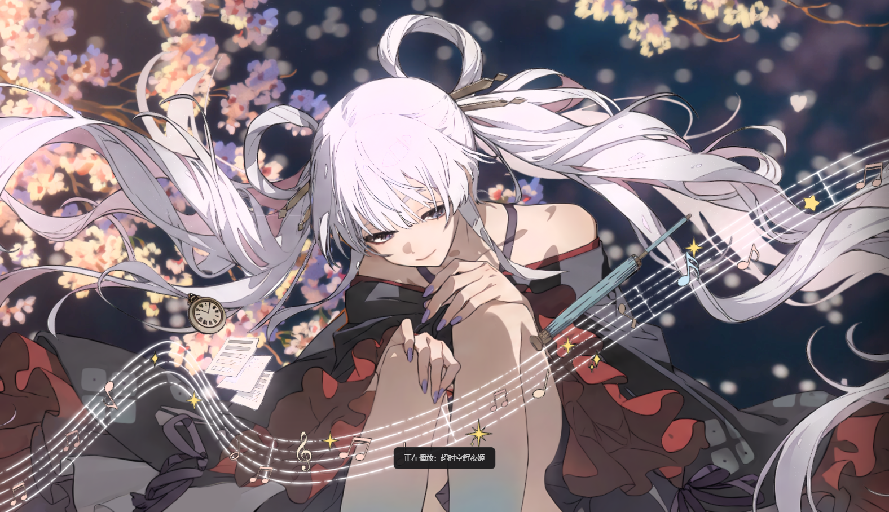
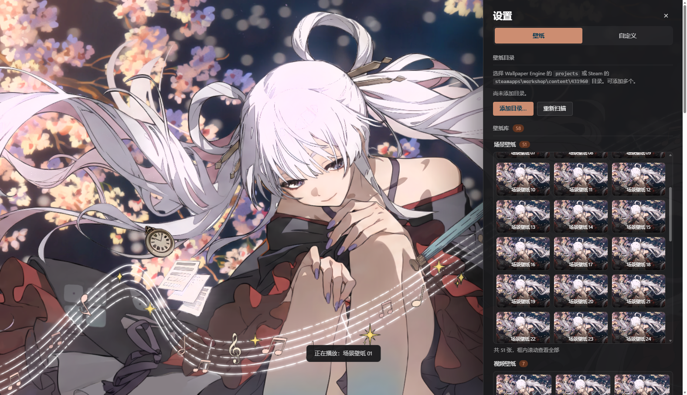

沙箱里什么都不给用
场景要在 sandbox 页里渲染（引擎要 eval），而沙箱是不透明源：localStorage 一碰就抛错，caches 直接不可用。最后把它们垫成内存实现才跑起来。
一个把 Wallpaper Engine 壁纸放进浏览器新标签页的扩展。场景壁纸在本地渲染， 能跟着鼠标晃、能点、能调画质，还有自带的属性和音频响应。壁纸只从你硬盘读，不上传。

1.0.0-alpha 是第一个能日常用的版本，功能基本齐了。
scene.pkg、散装 scene.json、video、image、gif 都能播。
作品里做的滑块、开关、下拉、颜色，面板里都有，拖动即时生效。
指针直接进渲染画布；没写图层深度的壁纸会自动补一个默认值。
帧率、渲染倍率、FXAA/MSAA、粒子、后处理，掉帧还会自动降分辨率。
亮度作用在舞台上，音量映射到场景引擎，默认静音。
5 / 10 / 30 / 60 分钟换一张，顺序或随机。
麦克风频谱，或接 media-bridge 用系统声音（浏览器自己读不到）。
右下角齿轮打开。壁纸库按类型分组，超过 50 张那一组变成可滚动的框，滚轮停在里面就能翻。

写这个扩展大部分时间花在这些地方，比功能本身费劲。
场景要在 sandbox 页里渲染（引擎要 eval），而沙箱是不透明源：localStorage 一碰就抛错，caches 直接不可用。最后把它们垫成内存实现才跑起来。
读成 ArrayBuffer 再传会内存翻倍，现在传 File 对象，结构化克隆只传引用。
引擎把相机偏移乘到每个图层的 parallaxDepth 上，而不少壁纸只开了全局 cameraparallax、图层没写深度，结果恒为 0。装配后补默认深度就正常了。
比对 window 引用会漏消息，改成宿主给帧编号、回包带编号。
宿主页和沙箱渲染页之间只有 postMessage，一条场景的生命周期：
宿主 沙箱渲染页
│ {t:"ping"} ───────────────────────▶ 探活
│ ◀─────────────────────── {t:"pong"}
│ {t:"mount", pkgFile|entry,
│ project, props, opts} ────────────▶ createScene() + load()
│ └─ {t:"read", id, path}
│ ◀──────────────── {t:"read:res", file} 宿主读盘回传
│ ◀────────────────────── {t:"ready", width, height, layers}
│ {t:"props"} / {t:"update"} / {t:"volume"} / {t:"audio"}
│ ◀──────────── {t:"stats"} / {t:"diag"} / {t:"error"}
真机：Edge 稳定版 + RTX 5070 Ti Laptop。
| 场景包 | 到首帧 |
|---|---|
| 0.17MB | ~505ms |
| 2.4MB | ~290ms |
| 314MB | ~1.6s（解析 1.1s） |
| 视频 10.8MB | ~81ms |
时间都花在解析、贴图上传和着色器编译上。想 250ms 内开大场景，目前没办法。
1. edge://extensions → 打开开发人员模式 2. 加载解压缩的扩展 → 选 we-newtab 目录 （或下载 release 里的 zip 解压后再选） 3. 新标签页右下角齿轮 → 添加目录… <Steam 库>\steamapps\workshop\content\431960
桌面壁纸、多显示器同步做不了。
浏览器拿不到系统音频，靠 media-bridge 回环。
引擎不提供场景序列化，大包就是要等一两秒。
订阅和下载只能在 Steam 客户端里做。